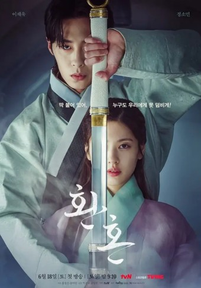
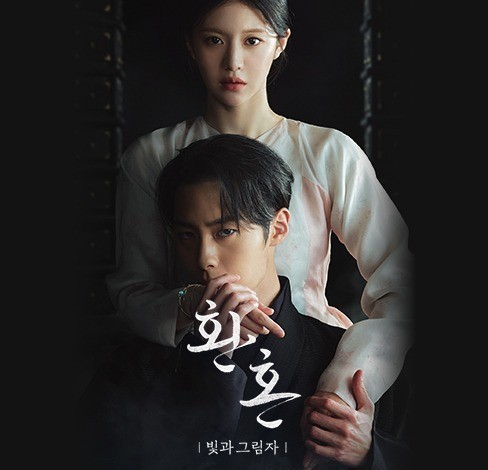

드라마 소개
환혼1
역사에도 지도에도 존재하지 않은 가상의 국가 '대호국'을 배경으로 영혼을 바꾸는 '환혼술'로 인해 운명이 비틀린 주인공들이 이를 극복하고 성장해가는 판타지 로맨스 활극. 장르는 가상역사극,판타지,무협,로맨틱 코미디,액션으로 2022년 6월 18일~2022년 8월28일까지 방송을 하였다. 제작진은 연출을 박준화, 장양호님이하셨고 극본은 홍정은, 홍미란님이 하셨다.
환혼2:빛과 그림자
환혼1의 후속작으로 빛과 그림자라는 부제목을 가졌다. 환혼 시즌1 내용인 그 사건 이후3년이 흘렀고, 이미 언론에 보도된 대로 여주인공이 바뀌었다. 무덕이 정소민이 가고 낙수 고윤정이 등장인물로 나오는고 이후 이야기를 풀어갈 것이다.